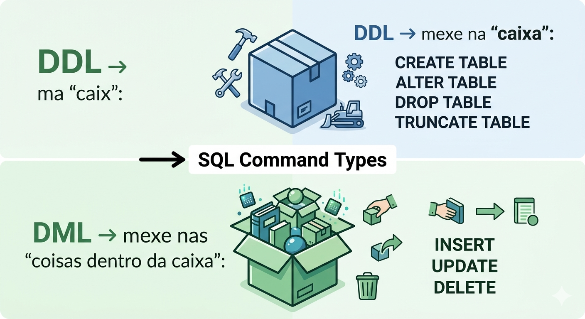
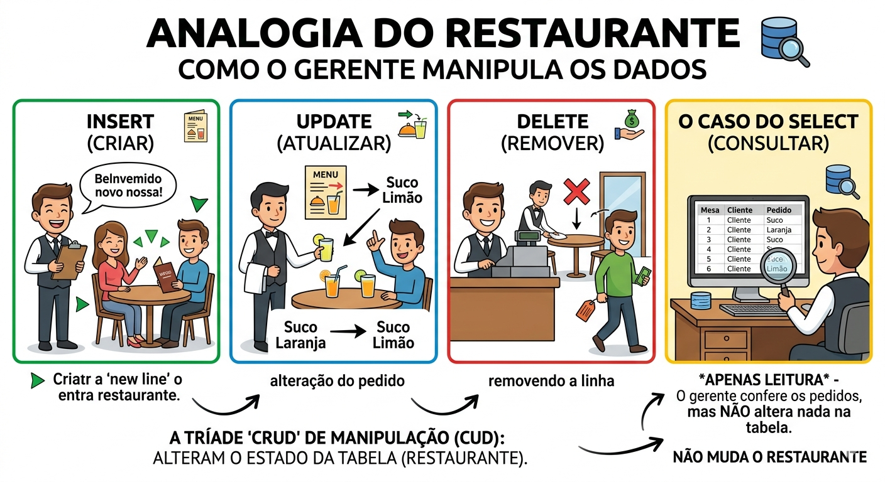
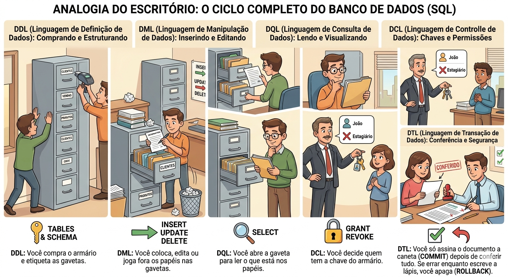

SQL na Prática: Subconjuntos da linguagem.
Descrição: Nesta aula melhoramos a construção e gestão de bancos de dados relacionais com o aprendizado dos subconjuntos SQL. Os comandos são divididos em grupos funcionais para gerenciar bancos de dados relacionais: DDL (estrutura), DML (manipulação), DQL (consulta), DCL (segurança) e TCL (transações). Eles organizam as instruções para criar, consultar, alterar e controlar o acesso a dados de forma eficiente, garantindo a integridade da informação.
Visão geral dos subconjuntos SQL
Muitas autores tratam SQL como um conjunto de "sublinguagens" conceituais, justamente para organizar mentalmente o que cada comando faz: definir estrutura (DDL), manipular dados (DML), consultar dados (DQL), controlar acesso (DCL) e controlar transações (TCL). Esses subconjuntos não são "módulos separados" no banco, mas categorias teóricas usadas na documentação e no ensino para dar ordem ao grande conjunto de comandos SQL.
Em vez de tratar o SQL como um bloco único, nós o dividimos para separar quem define a estrutura, quem manipula os dados e quem controla o acesso. Aqui estão os principais subconjuntos que você precisa conhecer:
1. DDL (Data Definition Language)
É a Linguagem de Definição de Dados. Serve para criar e modificar a "carcaça" do banco de dados (tabelas, índices, colunas).
- CREATE: Cria objetos (como uma nova tabela).
- ALTER: Altera a estrutura de um objeto existente.
- DROP: Exclui um objeto permanentemente.
- TRUNCATE: Remove todos os registros de uma tabela, mas mantém a estrutura.
2. DML (Data Manipulation Language)
É a Linguagem de Manipulação de Dados. É aqui que o trabalho do dia a dia acontece, lidando diretamente com a informação guardada.
- INSERT: Adiciona novos dados.
- UPDATE: Modifica dados existentes.
- DELETE: Remove registros específicos.
3. DQL (Data Query Language)
É a Linguagem de Consulta de Dados. Embora alguns autores a incluam dentro do DML, ela é tão importante que costuma ser tratada à parte.
- SELECT: É o comando soberano para buscar e visualizar informações.
4. DCL (Data Control Language)
É a Linguagem de Controle de Dados. Focada em segurança e permissões de usuários.
- GRANT: Dá acesso ou privilégios ao usuário.
- REVOKE: Retira os acessos concedidos anteriormente.
5. DTL ou TCL (Data/Transaction Control Language)
É a Linguagem de Controle de Transação. Ela garante a integridade dos dados, permitindo que você confirme ou desfaça mudanças em bloco.
- COMMIT: Salva permanentemente as alterações no banco.
- ROLLBACK: Desfaz as alterações caso algo tenha dado errado (o famoso "Ctrl+Z").
- SAVEPOINT: Cria um ponto de restauração dentro de uma transação.
Definição de DDL
A. CONCEITO
DDL: A Engenharia do Banco de Dados
DDL significa Data Definition Language (Linguagem de Definição de Dados). Se imaginarmos o banco de dados como uma biblioteca, a DDL não mexe nos livros, mas sim na construção do prédio, das estantes e das etiquetas de organização.
O que ela gerencia?
A DDL é responsável pelo esquema (schema) do banco. Ela define:
- Tabelas: Onde os dados ficarão.
- Colunas: Quais informações serão salvas (Nome, CPF, Data).
- Tipos de Dados: Se a coluna aceita texto, números ou datas.
- Constraints (Restrições): Regras como "este campo não pode ser vazio" ou "este e-mail deve ser único".
- Índices: "Atalhos" para encontrar dados mais rápido.
Os 4 Comandos Principais
- CREATE (Criar): É o ponto de partida. Usado para criar novas tabelas ou bancos de dados do zero. Exemplo: "Vou fabricar uma gaveta nova chamada 'Clientes'."
- ALTER (Alterar): Usado quando você precisa mudar a estrutura de algo que já existe. Adicionar uma coluna nova ou mudar o tipo de uma coluna. Exemplo: "Esqueci de colocar o campo 'Telefone' na gaveta de Clientes. Vou adicioná-lo agora."
- DROP (Remover/Derrubar): Exclui o objeto e tudo o que estiver dentro dele de forma permanente. Apaga a estrutura e os dados. Exemplo: "Não preciso mais da gaveta 'Fornecedores'. Vou jogá-la no lixo."
- TRUNCATE (Esvaziar): Remove todos os dados de dentro de uma tabela, mas mantém a estrutura (a "caixa") intacta para uso futuro. É mais rápido que o DELETE. Exemplo: "Quero limpar todos os papéis de dentro da gaveta, mas quero manter a gaveta lá no móvel."
Analogia para fixação
DDL (Estrutura): Você define que a garrafa é de vidro, tem 500ml e tampa azul.
DML (Dados): Você coloca a água, troca a água ou bebe a água.
Regra de ouro: Comandos DDL geralmente não podem ser desfeitos com um simples ROLLBACK em muitos sistemas de banco de dados. Mexeu na DDL, a mudança é estrutural e imediata!
B. VISUALIZANDO

C. ATIVIDADE
Sistema de Livraria Comunitária: Para este exercício, utilizaremos o contexto de uma Biblioteca, que é comum para todos nós. Vamos definir três tabelas essenciais para o funcionamento básico:
| Tabela | Propósito | Campos |
|---|---|---|
| LIVRO | Armazenar o acervo | ID, Título, IDAutor, Preço |
| AUTOR | Dados de quem escreve | ID, Nome, Nacionalidade |
| CLIENTE | Quem aluga | ID, Nome, Email |
Desafio: Você deve redigir os scripts SQL que criam essas três tabelas. Lembre-se da ordem de criação: tabelas que não dependem de ninguém (como Autor e Cliente) devem vir antes daquelas que possuem referências (como Livro). Ao final apresente os scripts para o Professor.
O que é DML? (Data Manipulation Language)
A. CONCEITO
Vamos transformar esse conceito técnico em algo palpável. Para facilitar o entendimento, imagine que um Banco de Dados é como um Arquivo de Aço de um escritório, e a DML é a mão do arquivista mexendo nos papéis dentro das gavetas.
A Linguagem de Manipulação de Dados é o conjunto de comandos SQL focado na ação. Se o DDL (Data Definition Language) serve para "construir o móvel" (criar tabelas), o DML serve para "gerenciar o conteúdo" (os registros). Pense na DML como os verbos de ação do seu banco de dados. Eles não mexem na estrutura da tabela, apenas na informação que vive lá dentro.
Os Pilares da Escrita (Os Comandos)
Para dominar a manipulação de dados, focamos em três comandos essenciais que alteram o estado da sua tabela:
- INSERT (O Adicionar): É o comando usado para "dar entrada" em uma nova informação. É como preencher uma ficha nova e colocá-la na gaveta.
- Ação: Cria uma nova linha na tabela.
- Exemplo: Adicionar um novo cliente ao sistema.
- UPDATE (O Editar): Usado quando a informação já existe, mas precisa ser corrigida ou atualizada.
- Ação: Altera valores em colunas de linhas que já estão lá.
- Cuidado: Sempre use a cláusula WHERE para não alterar todos os dados da tabela de uma vez só!
- Exemplo: Mudar o endereço de um cliente que se mudou.
- DELETE (O Remover): Utilizado para retirar informações que não são mais necessárias.
- Ação: Exclui uma ou mais linhas da tabela.
- Cuidado: Assim como no Update, o WHERE é seu amigo aqui para evitar apagar o banco inteiro.
- Exemplo: Remover um produto que saiu de linha.
B. VISUALIZANDO

C. ATIVIDADE
Movimentando a Livraria: Para complementar a criação das tabelas (DDL), agora vamos colocar as mãos na massa com a DML. Esta atividade foca em popular e gerenciar a Livraria Comunitária que você acabou de estruturar. Agora que as gavetas do seu "Arquivo de Aço" (as tabelas AUTOR, CLIENTE e LIVRO) estão prontas, você é o arquivista responsável por registrar as primeiras operações da livraria.
Objetivo: Praticar a manipulação de registros utilizando os verbos de ação do SQL: INSERT, UPDATE e DELETE.
Parte 1: INSERT (Povoando o acervo)
Uma livraria vazia não ajuda ninguém! Registre os primeiros dados no sistema seguindo a lógica das chaves estrangeiras.
- Cadastre um Autor: Adicione o autor "Machado de Assis", nacionalidade "Brasileira".
- Cadastre um Cliente: Adicione você mesmo como cliente da livraria (Nome e Email).
- Cadastre um Livro: Adicione o livro "Dom Casmurro", preço "45.90", associando-o ao ID do autor que você acabou de criar.
Parte 2: UPDATE (Corrigindo informações)
O mercado mudou e precisamos ajustar nossos dados.
- Reajuste de Preço: O livro "Dom Casmurro" entrou em promoção. Altere o preço dele para 39.90. Dica: Não esqueça do WHERE para não alterar o preço de todos os livros da livraria por engano!
- Atualização de Cadastro: O cliente que você cadastrou mudou de e-mail. Atualize o registro com um novo endereço eletrônico.
Parte 3: DELETE (Limpando o arquivo)
Alguns registros precisam ser removidos para manter o sistema organizado.
- Remover Cliente: Um cliente solicitou a exclusão de seus dados da base. Escreva o comando para remover o seu registro da tabela CLIENTE.
- Reflexão Crítica: Se você tentasse deletar o Autor "Machado de Assis" agora, mas o Livro "Dom Casmurro" ainda estivesse cadastrado no banco, o que você acha que aconteceria? (Considere a regra de integridade referencial).
Entrega para o Professor: Redija os scripts SQL das operações acima. Para que seu código seja seguro.
Dica de Ouro do Arquivista: Sempre que for rodar um UPDATE ou DELETE, faça um SELECT antes com o mesmo WHERE que pretende usar. Assim, você tem certeza de quais linhas serão afetadas antes de "canetar" a alteração definitiva!
DQL - Um caso à parte
A. CONCEITO
Para fechar o nosso entendimento sobre SQL, chegamos ao "olho" do sistema. Se o DDL constrói o armário e o DML mexe nas pastas, o DQL é o ato de abrir a gaveta e ler o que está escrito.
Mas afinal o que é DQL (Data Query Language)? A Linguagem de Consulta de Dados é a parte do SQL focada em extrair e visualizar informações. É aqui que o banco de dados mostra seu verdadeiro valor: a capacidade de encontrar uma agulha no palheiro em milissegundos. O DQL não altera absolutamente nada no seu banco. Ele é como uma lanterna: você ilumina os dados para enxergá-los, mas a luz não muda a cor ou o formato do que está sendo iluminado.
O Comando Soberano: SELECT
O SELECT é, sem dúvida, o comando mais utilizado em todo o universo SQL. Ele funciona como um filtro inteligente que responde às suas perguntas. E como ele funciona na prática?
Imagine que você está diante do arquivo de aço da biblioteca e faz um pedido ao arquivista: "Por favor, me mostre apenas o Título e o Preço de todos os livros que custam mais de R$ 50,00."
No mundo do SQL, esse pedido "traduzido" seria:
- SELECT (O que eu quero ver?): Titulo, Preço
- FROM (Onde isso está guardado?): LIVRO
- WHERE (Qual é o critério?): Preço > 50.00
A Diferença Crucial: Ver x Mexer
É muito comum ver o SELECT dentro do grupo DML em alguns livros, mas didaticamente ele ganha sua própria categoria (DQL) por um motivo simples: Segurança de Estado.
- No DML (Escrita): Você tem o poder de mudar a realidade (mudar um preço, apagar um cliente). Existe risco.
- No DQL (Leitura): Você apenas observa. É uma operação segura que pode ser repetida mil vezes sem nunca afetar a integridade dos dados.
B. VISUALIZANDO

C. ATIVIDADE
Baseado na nossa Livraria Comunitária, como você escreveria o "comando de voz" para o banco de dados se quisesse:
Crie um script que lista o Nome de todos os Clientes que possuem o email finalizado em '@gmail.com'?
Finalizando DCL e DTL
A. CONCEITO
Para completar sua jornada pelo universo SQL, vamos aos dois últimos pilares. Se o banco de dados fosse um banco de dinheiro real, o DCL seria o segurança da porta e o DTL seria o sistema que garante que seu dinheiro não suma durante uma transferência.
DCL (Data Control Language)
A Linguagem de Controle de Dados é o "porteiro" do banco de dados. Em uma empresa, nem todo mundo pode ver tudo. O RH não precisa ver o código-fonte, e o estagiário talvez não deva ver os salários da diretoria. O DCL serve para gerenciar quem pode fazer o quê.
- GRANT (Conceder): É como dar uma chave para alguém. Você autoriza um usuário a fazer um SELECT, INSERT ou qualquer outra ação. Exemplo: "Eu dou permissão para o João ler a tabela de Livros."
- REVOKE (Revogar): É como tomar a chave de volta. Você retira um acesso que tinha dado antes. Exemplo: "O João saiu da equipe, então vou tirar o acesso dele ao sistema."
DTL ou TCL (Transaction Control Language)
A Linguagem de Controle de Transação é o "botão de segurança" das suas operações. Ela lida com a integridade. Imagine que você está transferindo dinheiro: o sistema tira da sua conta (Operação 1), mas antes de depositar na outra, a internet cai (Operação 2 falhou). O DTL garante que o dinheiro volte para você em vez de sumir no limbo.
- COMMIT (Confirmar): É o botão de "Salvar". Você diz ao banco: "Tudo deu certo, pode gravar isso no disco para sempre". Uma vez dado o COMMIT, não tem mais volta fácil.
- ROLLBACK (Desfazer): É o sagrado "Ctrl + Z". Se você percebeu que fez um DELETE sem WHERE (o pesadelo de todo programador), o ROLLBACK cancela tudo o que você fez desde o último COMMIT e volta os dados ao que eram antes.
- SAVEPOINT (Ponto de Salvamento): É como um checkpoint de videogame. Você cria um ponto de restauração no meio de um trabalho longo. Se errar o final, volta para o SAVEPOINT em vez de recomeçar tudo do zero.
B. VISUALIZANDO

Resumo da aula: O Universo SQL
Nesta aula, exploramos que o SQL não é um bloco único, mas sim um conjunto de categorias teóricas (sublinguagens) que organizam como interagimos com os dados e a estrutura de um banco de dados.
1. DDL: A Engenharia (Estrutura)
- Responsável por construir a "carcaça" do banco (tabelas e colunas).
- Comandos: CREATE, ALTER, DROP e TRUNCATE.
- Analogia: É como construir o prédio de uma biblioteca e instalar as estantes.
2. DML: A Ação (Manipulação)
- Lida diretamente com a informação guardada dentro das estruturas.
- Comandos: INSERT, UPDATE e DELETE.
- Analogia: É a mão do arquivista colocando, editando ou removendo papéis das gavetas.
3. DQL: O Olhar (Consulta)
- Focada exclusivamente em extrair e visualizar informações sem alterá-las.
- Comando Soberano: SELECT.
- Analogia: Funciona como uma lanterna que ilumina os dados para leitura, sem mudar sua cor ou formato.
4. DCL: A Segurança (Controle)
- Gerencia as permissões e quem tem autorização para acessar o quê.
- Comandos: GRANT (dar acesso) e REVOKE (retirar acesso).
- Analogia: É o "porteiro" ou segurança que decide quem tem as chaves do arquivo.
5. DTL/TCL: A Integridade (Transação)
- Garante que operações complexas sejam concluídas com sucesso ou totalmente desfeitas em caso de erro.
- Comandos: COMMIT (salvar), ROLLBACK (desfazer) e SAVEPOINT (ponto de restauração).
- Analogia: O botão de "Salvar" definitivo versus o sagrado "Ctrl+Z" do banco de dados.
Dica de Ouro: Lembre-se sempre de que, enquanto o DQL é seguro para leitura, comandos de DML (UPDATE e DELETE) exigem o uso cauteloso da cláusula WHERE para evitar alterações indesejadas em todo o banco de dados.
FECHAMENTO
Próxima Aula:
Na próxima aula vamos iniciar nossos estudos da linguagem PHP, que será a base do nosso projeto de Situação de Aprendizagem. Iniciaremos com a exposição da sintaxe PHP, variáveis, tipos, arrays, $_GET, $_POST. Demonstração de como criar.php no servidor local e abrir no browser e na prática vamos construir um formulário HTML processar com PHP exibir dados e validação server-side básica.